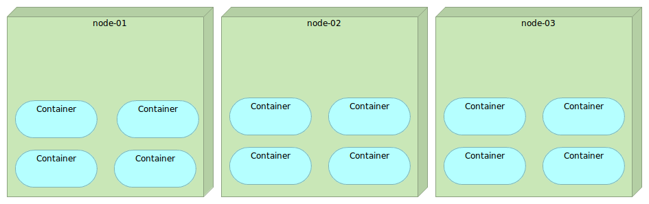
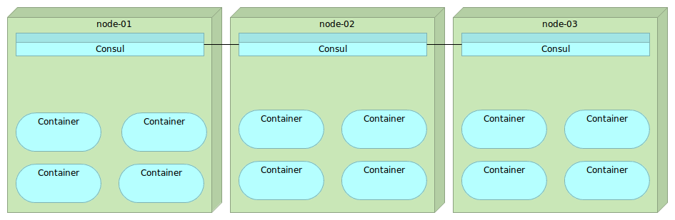
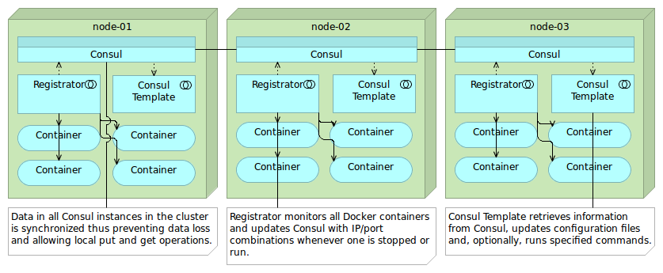

Service Discovery
Created by Viktor Farcic for Technology Conversations
@vfarcic
Viktor Farcic
- Senior Consultant at CloudBees
- Never developed in Fortran
- Passionate about microservices, continuous deployment and TDD
- Blogger in TechnologyConversations.com
- Java Test-Driven Development: Mastering TDD Through Katas
Service Discovery

Service Discovery
Single node

Service Discovery
Multiple nodes
Service Discovery
Service Discovery Elements
- Service registry
- Service registration
- Service discovery
Service Discovery
Tools
- Manual configuration
- Zookeeper
- etcd / Registrator / confd
Service Discovery
Servers
git clone https://github.com/vfarcic/ms-lifecycle.git
cd ms-lifecycle
vagrant up cd serv-disc-01 serv-disc-02 serv-disc-03 \
--provision
vagrant ssh cd
Service Discovery
Setting up Consul
ansible-playbook \
/vagrant/ansible/consul.yml \
-i /vagrant/ansible/hosts/serv-disc
curl 10.100.194.201:8500/v1/catalog/nodes \
| jq '.'
Service Discovery
Consul
Service Discovery
Key/value store: PUT
curl -X PUT -d 'this is a test' \
http://10.100.194.201:8500/v1/kv/msg1
curl -X PUT -d 'this is another test' \
http://10.100.194.202:8500/v1/kv/messages/msg2
curl -X PUT -d 'this is a test with flags' \
http://10.100.194.203:8500/v1/kv/messages/msg3?flags=1234
Service Discovery
Key/value store: GET/DELETE
curl http://10.100.194.203:8500/v1/kv/?recurse \
| jq '.'
curl http://10.100.194.202:8500/v1/kv/msg1 \
| jq '.'
curl http://10.100.194.201:8500/v1/kv/msg1?raw
curl -X DELETE http://10.100.194.201:8500/v1/kv/messages/msg2
curl http://10.100.194.203:8500/v1/kv/?recurse \
| jq '.'
curl -X DELETE http://10.100.194.202:8500/v1/kv/?recurse
curl http://10.100.194.203:8500/v1/kv/?recurse \
| jq '.'
Service Discovery
Setting up Registrator
ansible-playbook \
/vagrant/ansible/registrator.yml \
-i /vagrant/ansible/hosts/serv-disc
Service Discovery
Consul / Registrator

Service Discovery
Registering service
exit # Exit cd
vagrant ssh serv-disc-01
sudo docker run -d --name nginx \
--env SERVICE_NAME=nginx \
--env SERVICE_ID=nginx \
-p 1234:80 \
nginx
curl http://10.100.194.201:8500/v1/catalog/service/nginx \
| jq '.'
Service Discovery
Registering service again
exit
vagrant ssh serv-disc-02
sudo docker run -d --name nginx2 \
--env "SERVICE_ID=nginx2" \
--env "SERVICE_NAME=nginx" \
--env "SERVICE_TAGS=balancer,proxy,www" \
-p 1111:80 \
nginx
curl http://localhost:8500/v1/catalog/service/nginx \
| jq '.'
Service Discovery
Setting Up Consul Template
exit
vagrant ssh cd
ansible-playbook \
/vagrant/ansible/consul-template.yml \
-i /vagrant/ansible/hosts/serv-disc
Service Discovery
Consul / Registrator / Consul Template
Service Discovery
Running Consul Template
exit # Exit cd node
vagrant ssh serv-disc-01 # Enter serv-disc-01
curl http://localhost:8500/v1/catalog/service/nginx \
| jq '.'
cat /data/consul-template/example.ctmpl
consul-template \
-consul localhost:8500 \
-template "/data/consul-template/example.ctmpl:/tmp/example.conf" \
-once
cat /tmp/example.conf
Service Discovery
Cleanup
exit # Exit cd node
vagrant halt cd serv-disc-01 serv-disc-02 serv-disc-03